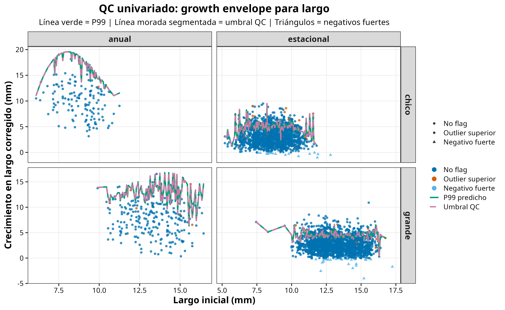
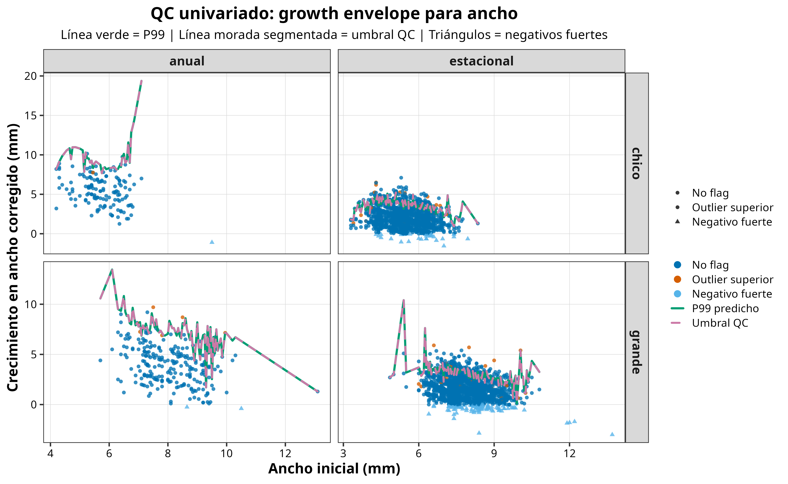
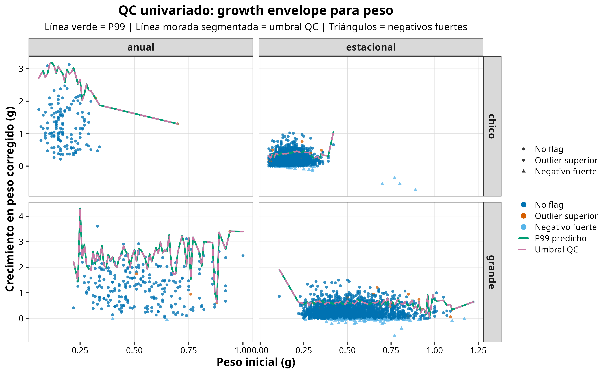
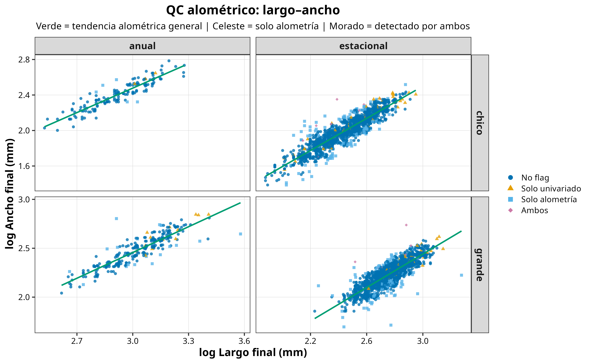
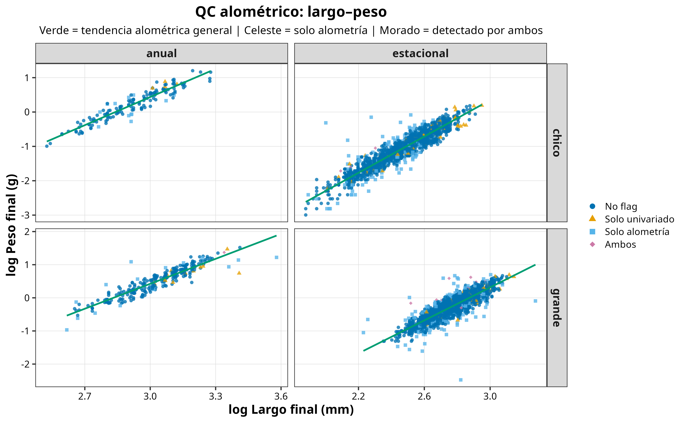
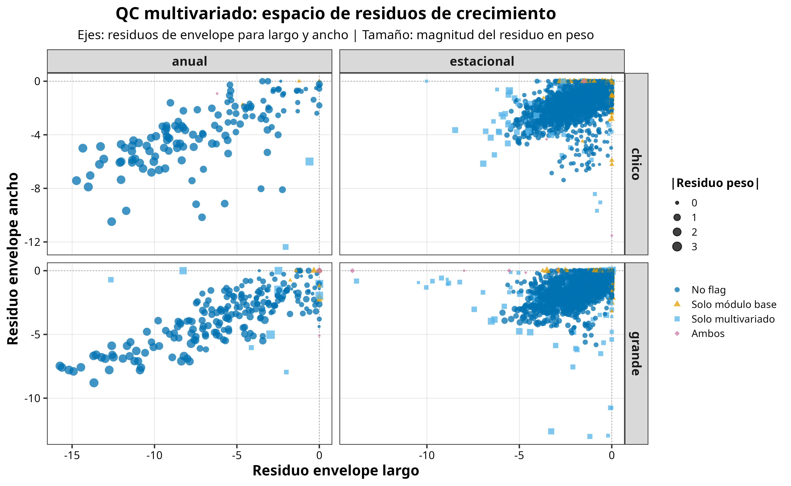
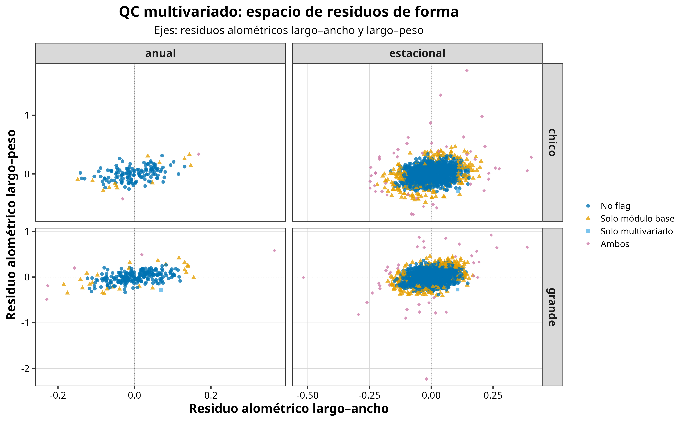
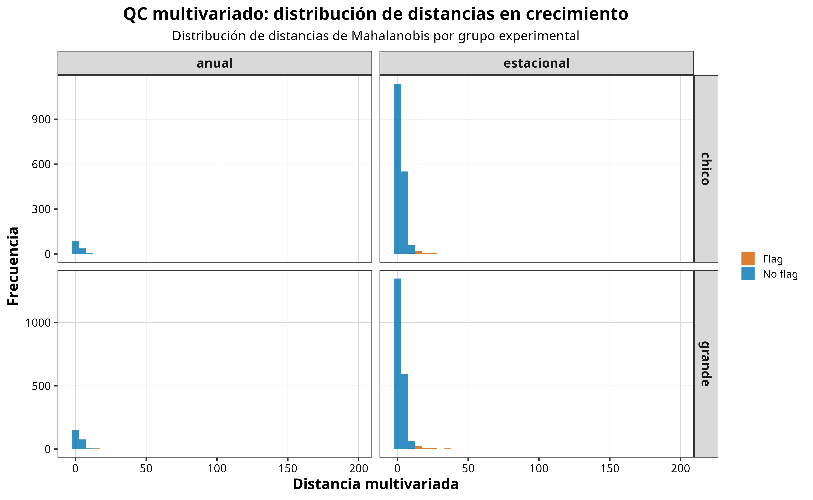
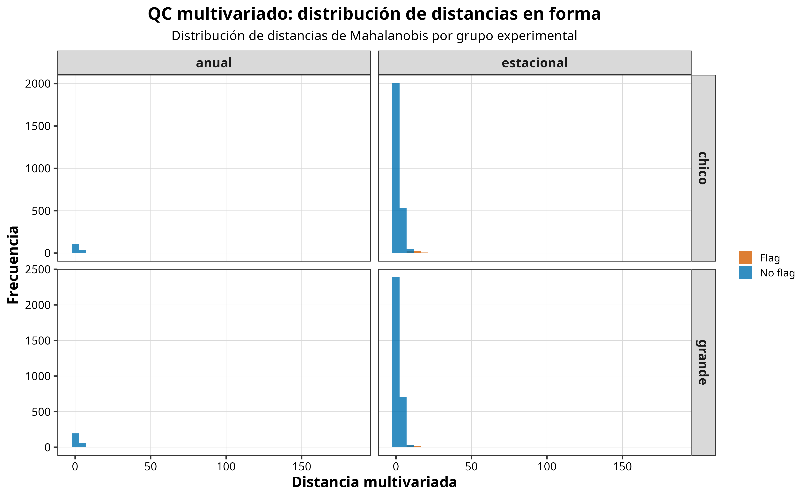

Pre-procesamiento y control de calidad (QC)
Pre-procesamiento y control de calidad
Objetivo
Esta sección describe el flujo completo de pre-procesamiento y control de calidad (Quality Control) aplicado a los datos de crecimiento de P. purpuratus. El objetivo fue:
- consolidar mediciones individuales provenientes de múltiples planillas excel,
- calcular tasas de crecimiento en largo (mm), ancho (mm) y peso (gr),
- identificar observaciones potencialmente inconsistentes (duplicados, error de digitación, etc.),
- mantener trazabilidad completa de todas las decisiones,
- y generar salidas reproducibles para análisis base, análisis de sensibilidad y una revisión detallada.
A diferencia de un enfoque puramente estadístico basado en la eliminación automática de outliers, aquí implementamos un sistema de QC biológicamente informado, basado en banderas de calidad (flags) y no en filtrado ciego con motosierra.
Estructura de los datos de entrada
El script trabaja con archivos .xlsx independientes, correspondientes a combinaciones de tratamiento temporal y estación de exposición. Cada archivo contiene mediciones individuales tomadas en dos momentos (exposure_type):
- inicial
- final
A partir de estas mediciones se reconstruyen pares inicial–final por individuo para calcular:
- crecimiento en largo
- crecimiento en ancho
- crecimiento en peso
- tasas diarias de crecimiento para cada variable
Flujo general del procesamiento
El flujo puede resumirse así:
- Lectura y estandarización de planillas fuente
- Validación de columnas mínimas y creación de fecha
- Construcción de un identificador único por individuo (ID)
- Detección de duplicados
- Cálculo de cambios absolutos y tasas de crecimiento
- Aplicación de banderas básicas de integridad
- Corrección de negativos leves y marcado de negativos fuertes
- QC univariado basado en crecimiento máximo plausible
- QC alométrico basado en relaciones largo–ancho y largo–peso
- QC multivariado basado en combinaciones improbables de residuos
- Construcción de un puntaje global de QC (
qc_score)
- Asignación de una categoría final (
qc_categoria)
- Exportación de datasets, logs y resumen maestro en formato
.rdsy.xlsx
El QC no elimina observaciones automáticamente. En su lugar, cada individuo recibe una o más banderas de calidad, que luego pueden utilizarse para revisión, trazabilidad y análisis de sensibilidad.
Creación de identificador único
Cada individuo se identificó mediante un campo compuesto (chorito_id) construido a partir de variables clave del diseño experimental y del marcado en terreno, incluyendo:
- sitio
- color del tag
- número del tag
- clase de tamaño
- tratamiento
- estación
- plot
- información de reemplazo por pérdida
Este identificador permite emparejar de manera explícita las mediciones iniciales y finales y facilita la detección de duplicados o inconsistencias.
Cálculo de tasas de crecimiento
Una vez emparejadas las mediciones iniciales y finales, para cada individuo, se calcularon el crecimiento absoluto en largo, ancho y peso se estimó como la diferencia entre la medición final y la inicial. Si \(X_i\) corresponde al valor inicial, \(X_f\) al valor final y \(\Delta t\) al número de días transcurridos entre ambas mediciones, entonces:
\[ G_X = X_f - X_i \]
donde \(G_X\) representa el crecimiento absoluto de la variable \(X\).
La tasa diaria de crecimiento se calculó como:
\[ R_X = \frac{X_f - X_i}{\Delta t} \]
donde \(R_X\) es la tasa diaria de crecimiento para la variable \(X\).
En este estudio, las ecuaciones utilizadas fueron:
\[ \text{crecimiento\_largo\_mm} = \text{largo\_max\_mm\_final} - \text{largo\_max\_mm\_inicial} \]
\[ \text{crecimiento\_ancho\_mm} = \text{ancho\_max\_mm\_final} - \text{ancho\_max\_mm\_inicial} \]
\[ \text{crecimiento\_peso\_gr} = \text{peso\_gr\_final} - \text{peso\_gr\_inicial} \]
y luego:
\[ \text{tasa\_diaria\_largo} = \frac{\text{crecimiento\_largo\_mm}}{\text{dias}} \]
\[ \text{tasa\_diaria\_ancho} = \frac{\text{crecimiento\_ancho\_mm}}{\text{dias}} \]
\[ \text{tasa\_diaria\_peso} = \frac{\text{crecimiento\_peso\_gr}}{\text{dias}} \]
De este modo, las tasas quedaron expresadas en mm día\(^{-1}\) para largo y ancho, y en g día\(^{-1}\) para peso.
Corrección de negativos leves
Durante el control de calidad, se detectaron algunos casos con crecimiento negativo de pequeña magnitud, atribuibles probablemente a error de medición o pequeñas inconsistencias de registro. Para evitar interpretar estas diferencias menores como decrecimiento biológico real, se aplicó una corrección conservadora a los valores negativos leves.
Se definieron los siguientes umbrales:
- Largo: 0.05 mm
- Ancho: 0.05 mm
- Peso: 0.02 g
Cuando un valor de crecimiento fue negativo, pero su magnitud fue menor que el umbral correspondiente, se reemplazó por cero:
\[ G_X^{corr} = 0 \quad \text{si} \quad -\tau_X < G_X < 0 \]
donde \(\tau_X\) representa la tolerancia definida para cada variable.
En cambio, los valores negativos de mayor magnitud se mantuvieron en el dataset y fueron marcados mediante flags de control de calidad para su revisión posterior.
A partir de los crecimientos corregidos, se recalcularon las tasas diarias corregidas:
\[ \text{tasa\_diaria\_largo\_corr} = \frac{\text{crecimiento\_largo\_mm\_corr}}{\text{dias}} \]
\[ \text{tasa\_diaria\_ancho\_corr} = \frac{\text{crecimiento\_ancho\_mm\_corr}}{\text{dias}} \]
\[ \text{tasa\_diaria\_peso\_corr} = \frac{\text{crecimiento\_peso\_gr\_corr}}{\text{dias}} \]
Estas variables corregidas se utilizaron en las etapas posteriores del pipeline de control de calidad, particularmente en la detección de outliers univariados, chequeos alométricos y evaluación multivariada.
Sistema de control de calidad (QC)
Filosofía general
El sistema de QC fue diseñado para distinguir entre:
- variabilidad biológica real,
- errores de medición o digitación,
- inconsistencias de emparejamiento entre mediciones,
- y combinaciones improbables de rasgos.
En lugar de asumir que todo valor extremo es un error, se implementó un enfoque escalonado y modular, compuesto por cuatro niveles complementarios:
- flags básicos
- QC univariado
- QC alométrico
- QC multivariado
1. Flags básicos de integridad
El primer nivel identifica problemas estructurales del dataset, incluyendo:
- intervalos de exposición inválidos o faltantes
- duplicados de medición
- duplicados de individuo
- observaciones potencialmente dudosas en terreno o laboratorio
Estas banderas no implican necesariamente exclusión, pero permiten rastrear observaciones que merecen atención adicional.
2. Manejo de crecimientos negativos
El crecimiento negativo se trató de forma explícita, reconociendo que en bivalvos puede existir erosión del borde de la concha, mantención neta de tamaño o pequeñas diferencias cercanas al error instrumental.
Por ello se distinguieron dos categorías:
Negativos leves
Corresponden a cambios negativos de muy baja magnitud, compatibles con error de medición o mantención de biomasa/talla. Estos valores fueron corregidos a cero en las variables corregidas (*_corr).
Negativos fuertes
Corresponden a decrecimientos de magnitud mayor y fueron marcados, no eliminados automáticamente. Estos casos son especialmente útiles para identificar posibles errores de emparejamiento o asignación.
3. QC univariado: crecimiento máximo plausible
El siguiente nivel evalúa si cada individuo mostró un crecimiento mayor al máximo plausible esperado para su tamaño inicial.
Se construyeron envelopes superiores de crecimiento para:
- largo
- ancho
- peso
Estos envelopes se estimaron mediante regresión cuantílica al percentil 99, separando por:
- sitio
- clase de tamaño
- tratamiento
Se utilizó una estrategia híbrida:
- splines cuando el tamaño muestral y el rango del predictor fueron suficientes
- regresión lineal como alternativa conservadora cuando el soporte de datos era menor
A partir de los residuos positivos respecto del envelope se calculó un umbral QC. Los individuos que excedieron ese límite fueron marcados como outliers univariados.
Interpretación
Este módulo responde a la pregunta:
¿Este individuo creció más de lo plausible para su tamaño inicial dentro de su contexto experimental?
4. QC alométrico: consistencia morfológica final
El crecimiento también se evaluó desde la forma final del individuo, usando relaciones alométricas log-log entre:
- largo final y ancho final
- largo final y peso final
Los individuos que se desviaron fuertemente de estas relaciones esperadas fueron marcados como outliers alométricos.
Interpretación
Este módulo responde a la pregunta:
¿La morfología final del individuo es consistente con el patrón esperado para su largo?
Este paso es especialmente útil para detectar:
- errores de emparejamiento entre medición inicial y final
- pesos incompatibles con el largo observado
- anchos anómalos para un largo dado
- errores finos de digitación
5. QC multivariado: combinaciones improbables
Finalmente, se aplicó un control multivariado basado en distancias de Mahalanobis para identificar individuos cuya combinación conjunta de residuos fuera improbable, aunque ninguna variable por separado pareciera extrema.
Se implementaron dos módulos:
Multivariado de crecimiento
Usa conjuntamente los residuos de:
- largo
- ancho
- peso
Multivariado de forma
Usa conjuntamente los residuos alométricos de:
- largo–ancho
- largo–peso
Interpretación
Este módulo responde a la pregunta:
¿La combinación conjunta de rasgos o residuos de este individuo es improbable, aunque cada variable por separado no parezca extrema?
6. Puntaje global y categoría final
A partir de las banderas generadas por los distintos módulos se calculó un puntaje global:
qc_score
y una categoría final resumida:
okrevisarsospechosomuy_sospechoso
Estas categorías no sustituyen el juicio biológico, pero permiten ordenar la evidencia y priorizar revisión.
El sistema de QC fue diseñado para marcar observaciones, no para eliminarlas automáticamente. Esto permite mantener trazabilidad completa, reducir sesgos por sobre-filtrado y evaluar análisis de sensibilidad de forma transparente.
Visualización del control de calidad QC
Las figuras diagnósticas se organizaron en tres bloques principales.
QC univariado
Estas figuras muestran los envelopes superiores de crecimiento plausible para largo, ancho y peso. Los puntos marcados corresponden a observaciones que exceden el umbral esperado para su tamaño inicial dentro de cada contexto experimental.
Figuras



QC alométrico
Estas relaciones alométricas permiten evaluar si el ancho final y el peso final son consistentes con el largo final observado. Los puntos destacados corresponden a individuos cuya morfología final se desvía del patrón esperado.
Figuras


QC multivariado
Estas figuras resumen la posición conjunta de cada observación en el espacio de residuos de crecimiento y de forma. El objetivo es detectar individuos cuya combinación de rasgos sea improbable, incluso cuando cada variable por separado no parezca extrema.
Figuras




Las figuras diagnósticas se construyeron como herramientas de inspección general. En algunos casos, una observación marcada puede parecer visualmente cercana a la nube principal cuando se agregan múltiples sitios dentro de un mismo panel. La decisión final de QC se basa siempre en los umbrales y residuos calculados a nivel del grupo correspondiente.
Archivos generados por el flujo de trabajo
El pipeline genera múltiples salidas complementarias.
Archivos .rds
Mediciones_Crecimiento_Ppurpuratus_RAW.rds
Respaldo directo de las mediciones originales leídas desde las planillas fuente.
Tasas_Crecimiento_Ppurpuratus_RAW.rds
Contiene los pares inicial–final por individuo y las tasas calculadas antes de aplicar las banderas de QC.
Tasas_Crecimiento_Ppurpuratus_QC.rds
Tabla analítica principal con:
- tasas de crecimiento
- variables corregidas
- banderas de QC univariado
- banderas de QC alométrico
- banderas de QC multivariado
qc_scoreqc_categoria
Tasas_Crecimiento_Ppurpuratus_ANALISIS_BASE.rds
Dataset sugerido para análisis base. Excluye únicamente:
- duplicados de medición
- duplicados de individuo
- intervalos de exposición inválidos
Tasas_Crecimiento_Ppurpuratus_ANALISIS_SENSIBILIDAD.rds
Dataset sugerido para análisis de sensibilidad. Además de las exclusiones estructurales anteriores, remueve las observaciones clasificadas como muy sospechosas.
Tasas_Crecimiento_Ppurpuratus_VIS_LIMPIO.rds
Versión derivada para visualización descriptiva. Excluye observaciones con problemas estructurales, negativos fuertes y casos clasificados como muy_sospechoso. Esta versión fue diseñada para facilitar la inspección gráfica de patrones generales sin que observaciones altamente problemáticas dominen la visualización.
VIS_LIMPIO fue pensado para figuras descriptivas y exploratorias. Los análisis principales siguen referenciando ANALISIS_BASE, mientras que la trazabilidad completa se conserva en QC.
Estructura del Excel maestro
El archivo Crecimiento_Ppurpuratus_MASTER_QC.xlsx consolida tanto los datos originales como las distintas salidas del sistema de QC. Su estructura está pensada para trazabilidad, inspección y discusión metodológica.
Pestañas de datos principales
mediciones_raw
Contiene las mediciones originales importadas desde las planillas fuente, antes del cálculo de tasas.
tasas_raw
Contiene los pares inicial–final por individuo, junto con los cambios absolutos y tasas de crecimiento calculadas antes de aplicar QC.
tasas_qc
Es la tabla analítica principal del sistema. Integra:
- variables originales
- variables corregidas
- banderas básicas
- QC univariado
- QC alométrico
- QC multivariado
- score y categoría final
tasas_analisis_base
Versión recomendada para análisis principal, excluyendo solo problemas estructurales.
tasas_analisis_sens
Versión recomendada para análisis de sensibilidad, excluyendo además los casos muy sospechosos.
Pestañas de trazabilidad y revisión
| Grupo | Pestaña | Descripción |
|---|---|---|
| Duplicados | dup_medicion |
Lista de individuos con duplicados de medición. |
| Duplicados | dup_individuo |
Lista de individuos con duplicación a nivel de identificación. |
| Negativos | log_negativos |
Incluye todos los casos con crecimiento negativo en alguna variable. |
| Negativos | log_negativos_fuertes |
Subconjunto de negativos fuertes, más relevantes para revisión. |
| QC univariado | log_outlier_univar |
Lista total de observaciones marcadas por el QC univariado. |
| QC univariado | log_outlier_largo |
Subconjunto marcado específicamente en crecimiento en largo. |
| QC univariado | log_outlier_ancho |
Subconjunto marcado específicamente en crecimiento en ancho. |
| QC univariado | log_outlier_peso |
Subconjunto marcado específicamente en crecimiento en peso. |
| QC alométrico | log_outlier_shape |
Lista total de observaciones marcadas por el QC alométrico. |
| QC alométrico | log_allometry_la |
Subconjunto marcado por la relación alométrica largo–ancho. |
| QC alométrico | log_allometry_lp |
Subconjunto marcado por la relación alométrica largo–peso. |
| QC multivariado | log_outlier_multi |
Lista total de observaciones marcadas por el QC multivariado. |
| QC multivariado | log_multi_growth |
Subconjunto marcado por el multivariado de crecimiento. |
| QC multivariado | log_multi_shape |
Subconjunto marcado por el multivariado de forma. |
| Síntesis QC | log_qc_sospechoso |
Incluye todas las observaciones clasificadas como sospechoso o muy_sospechoso. |
diagnostico_qc
Resumen por:
- sitio
- clase de tamaño
- tratamiento
Incluye número de observaciones, frecuencia de flags y distribución por categorías QC.
resumen_qc_global
Resumen total del sistema de QC para todo el experimento.
tabla_combinaciones_qc
Resume las combinaciones entre los tres módulos principales:
- univariado
- alométrico
- multivariado
Permite distinguir observaciones detectadas por un solo módulo, por dos módulos o por los tres simultáneamente.
Para inspección detallada del sistema completo, la pestaña más importante es tasas_qc. Para análisis principales, la referencia recomendada es tasas_analisis_base. Para evaluación de sensibilidad, la referencia es tasas_analisis_sens.
Resumen ejecutivo del sistema de QC
En términos prácticos, el sistema implementado permite separar tres tipos de evidencia:
1. Extremos de crecimiento
Detectados por el QC univariado.
2. Inconsistencias morfológicas
Detectadas por el QC alométrico.
3. Combinaciones improbables de rasgos
Detectadas por el QC multivariado.
La combinación de estos módulos permite mantener observaciones potencialmente valiosas dentro del sistema, pero con una trazabilidad clara que facilita revisión, sensibilidad y discusión biológica.
Reproducibilidad
Todo el flujo de trabajo fue implementado mediante scripts reproducibles en R. El pipeline:
- lee planillas fuente en formato
.xlsx, - genera objetos consolidados
.rds, - produce un libro maestro
.xlsx, - y exporta figuras diagnósticas para inspección visual del sistema de QC.
Esto permite actualizar el procesamiento de forma consistente a medida que se incorporen nuevas mediciones o se refinen criterios de revisión.
Conclusión
El pre-procesamiento y control de calidad de los datos de crecimiento se estructuró como un sistema escalonado, transparente y biológicamente informado. En lugar de eliminar observaciones extremas de manera automática, se construyó una arquitectura de banderas que permite distinguir entre extremos plausibles, inconsistencias morfológicas y combinaciones conjuntas improbables. Esta aproximación conserva la variabilidad real del sistema, facilita la trazabilidad y fortalece la reproducibilidad de los análisis posteriores.